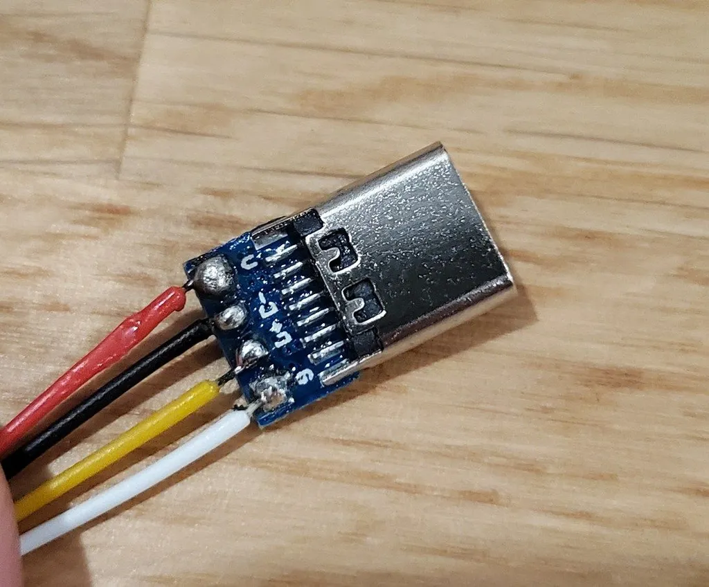
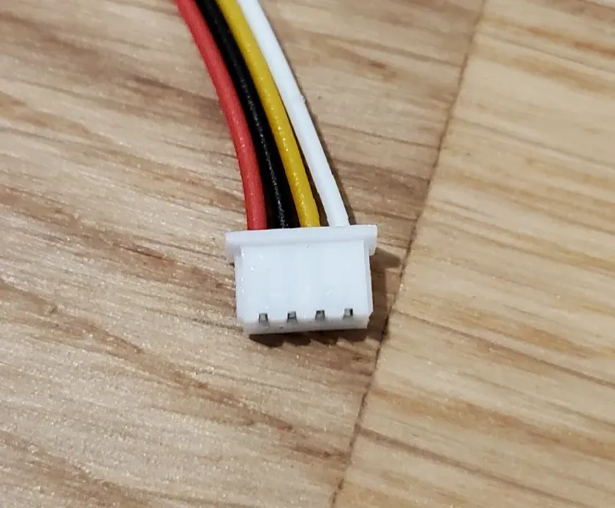
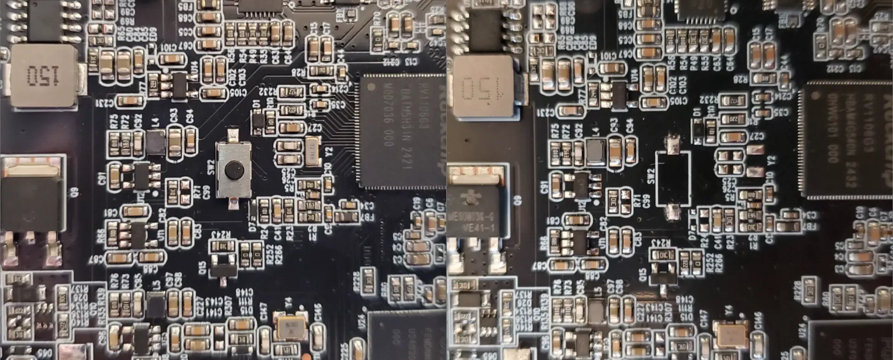
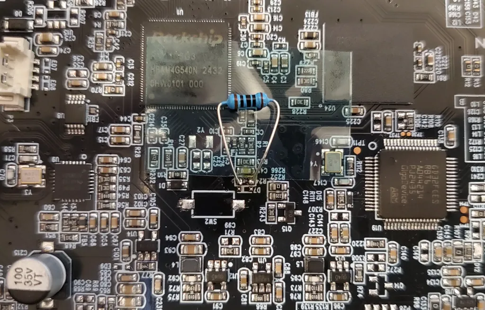

Mainboard connection
References
- Firmware flashing: https://github.com/Bushmills/Anycubic-Kobra-3-rooted/discussions/5#discussion-7091124
- Cable build: https://github.com/Bushmills/Anycubic-Kobra-3-rooted/discussions/5#discussioncomment-10443776
- Partition modification: https://github.com/Bushmills/Anycubic-Kobra-3-rooted/discussions/5#discussioncomment-11320579
The different printers in the Kobra series have different mainboards. Kobra 3, Kobra 3 Max and Kobra S1 ones are different but use a very similar structure.
Here is a step by step guide on how to do it with a Kobra 3 mainboard without the SW2 switch: Kobra 3 mainboard with missing SW2
Building the cable¶
The motherboard has USB firmware access using a JST MX / Molex PicoBlade 1.25mm pitch connector. You will need to build a cable to make it usable using a classic USB-A or USB-C connector.
If you want to use a USB-C female connector, you will need to use a USB-A to USB-C cable to connect to your computer. USB-C to USB-C might not work properly.
-
Get a JST MX / Molex PicoBlade 1.25mm pitch connector
-
Get a USB-A male or USB-C female breakout connector
Follow the wiring shown in the pictures. Beware, the colors don't mean anything here and your cable colors may vary. Here:
- Red is VCC
- Black is Data (-)
- Yellow is Data (+)
- White is GND

USB-C end of the cable
JST end of the cable
{kind=link}
{kind=link}
Motherboard preparation¶
Then you will need to get access to the motherboard. Unscrew the bottom plate of your printer, there are 2 long screws and some clips to access the inside.
Once inside, you will need to disconnect all the wires and cables marked in red in the picture below. They will prevent your computer from recognizing the motherboard properly.
Depending on your printer things will be plugged at different locations. The goal here is to remove any power-hungry devices that would prevent the MB from booting using USB power.
{kind=link}
On this Kobra 3 example, the JST / Molex connector is in blue and the serial debug connection is in pink.
Computer connection¶
At this point, you should be able to plug your JST / Molex connector to the motherboard.
Hold the SW2 switch (in orange in the picture above) or short its pins and plug the USB connector to your computer.
Now check if the USB device is recognized properly by typing lsusb. You should see a “Fuzhou Rockchip” device with the ID 2207:110c listed.
Here are a couple of potential issues and solutions:
- Retry the connection process multiple times, it can be flaky. Wait between each attempt
- Don't release the SW2 button too quickly
- Depending on your USB-C connector, only one side might work
- Use
dmesg -won your computer to have more information
Note
Some computers will simply refuse to recognize the device. For example, my desktop computer refused no matter what cable or Linux distro I used, but my laptop worked the first time.
Starting recovery mode without SW2¶
SW2 is used during boot to instruct the MB to start recovery mode. Unfortunately, shorting pins of SW2 is not enough to start recovery.
Some (I feel newer) mainboards have this component missing. Here is a comparison of one mainboard with the SW2 button and another one without.
{kind=link}

We can see that late MB units have some missing components around SW2, namely: SW2, D7, R24, C25, C26 and Y2.
The missing R24 component is a 100Ω resistor in line with the SW2 switch and needs to be replaced. Then it will be possible to short SW2 pins to boot in recovery mode.
Warning
Using such big components on small SMD pads is risky as you may easily rip one pad off. I didn’t have smaller one here to demonstrate
{kind=link}

Tooling preparation¶
Now that the connection is working properly, you will need to collect and compile some tools:
- Dependencies:
libusb-1.0unzip
- xrock (https://github.com/xboot/xrock)
git clone <https://github.com/xboot/xrockcd xrockmake
-
upgrade_tool (https://wiki.luckfox.com/Core3566/#332-linux)
unzip upgrade_tool_v2.17.zipcd upgrade_tool_v2.17chmod +x upgrade_tool
-
Some rockchip binaries (https://github.com/rockchip-linux/rkbin/tree/master/bin/rv11)
rv1106_ddr_924MHz_v1.15.ziprv1106_usbplug_v1.09.zip
Flashing procedure¶
Initialize the connection¶
Switch the motherboard in the right mode to interact with the computer:
$ sudo ./xrock maskrom rv1106_ddr_924MHz_v1.15.bin rv1106_usbplug_v1.09.bin --rc4-off
# This command should return directly
Check the connection by reading flash information:
$ sudo ./upgrade_tool rfi
Using config.ini
Flash Info:
Manufacturer: SAMSUNG,value=00
Flash Size: 7456MB
Block Size: 512KB
Page Size: 2KB
ECC Bits: 0
Access Time: 40
Flash CS: Flash<0>
Read / Backup your partitions¶
Dump the partition layout:
$ sudo ./upgrade_tool pl
Using config.ini
Partition Info(parameter):
NO LBA Size Name
01 0x00000000 0x00000040 env
02 0x00000040 0x00000400 idblock
03 0x00000440 0x00000400 uboot_a
04 0x00000840 0x00000400 uboot_b
05 0x00000c40 0x00000200 misc
06 0x00000e40 0x00008000 boot_a
07 0x00008e40 0x00008000 boot_b
08 0x00010e40 0x00018000 system_a
09 0x00028e40 0x00018000 system_b
10 0x00040e40 0x00020000 oem_a
11 0x00060e40 0x00020000 oem_b
12 0x00080e40 0x00100000 userdata
13 0x00180e40 0x00080000 ac_lib_a
14 0x00200e40 0x00080000 ac_lib_b
15 0x00280e40 0x00020000 ac_app_a
16 0x002a0e40 0x00020000 ac_app_b
17 0x002c0e40 0xffffffff useremain
Dump all partitions:
sudo ./upgrade_tool pl | tee output/partitions.txt
sudo ./upgrade_tool rl 0x00000000 0x00000040 output/env.img
sudo ./upgrade_tool rl 0x00000040 0x00000400 output/idblock.img
sudo ./upgrade_tool rl 0x00000440 0x00000400 output/uboot_a.img
sudo ./upgrade_tool rl 0x00000840 0x00000400 output/uboot_b.img
sudo ./upgrade_tool rl 0x00000c40 0x00000200 output/misc.img
sudo ./upgrade_tool rl 0x00000e40 0x00008000 output/boot_a.img
sudo ./upgrade_tool rl 0x00008e40 0x00008000 output/boot_b.img
sudo ./upgrade_tool rl 0x00010e40 0x00018000 output/system_a.img
sudo ./upgrade_tool rl 0x00028e40 0x00018000 output/system_b.img
sudo ./upgrade_tool rl 0x00040e40 0x00020000 output/oem_a.img
sudo ./upgrade_tool rl 0x00060e40 0x00020000 output/oem_b.img
sudo ./upgrade_tool rl 0x00080e40 0x00100000 output/userdata.img
sudo ./upgrade_tool rl 0x00180e40 0x00080000 output/ac_lib_a.img
sudo ./upgrade_tool rl 0x00200e40 0x00080000 output/ac_lib_b.img
sudo ./upgrade_tool rl 0x00280e40 0x00020000 output/ac_app_a.img
sudo ./upgrade_tool rl 0x002a0e40 0x00020000 output/ac_app_b.img
sudo ./upgrade_tool rl 0x002c0e40 0xffffffff output/useremain.img
# The last one is dumping indefinitely, not sure why yet
Modify the partitions¶
Expose the dumped partition as a device, for example with userdata:
The file /dev/loop0 is now mapped to your parition dump. Now we can mount it to a directory in order to access and modify it.
At this point, the directory _userdata is your partition and you can modify the content. Everything is directly flushed to the partition dump, so make sure the original dump is backed up properly.
Write / Flash the partition¶
To write a partition back to the motherboard, reuse the offset from the partition list to write the partition at thr right location, for example for userdata: